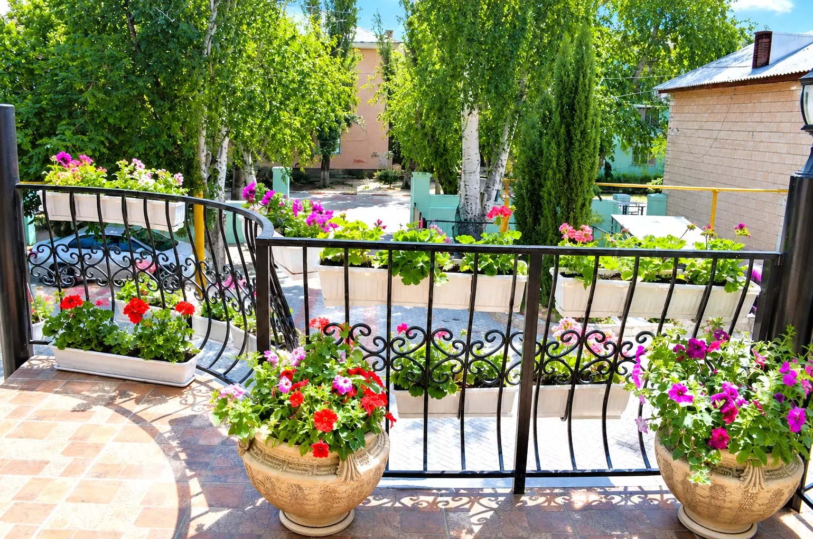

Уютный гостевой дом в Феодосии,
где хочется остаться подольше
Наш гостевой дом — это уютное место для тех, кто ценит спокойный отдых, тёплую атмосферу и близость к морю. Здесь можно проснуться без спешки, насладиться кофе во дворе, прогуляться до пляжа и провести вечер в приятной компании.
Мы создали «Жасмин» для тех, кто приезжает в Феодосию не за шумом и суетой, а за тишиной и морем. У нас всего несколько номеров, что позволяет уделить внимание каждому гостю.

Главное в «Жасмине» — это двор. Утопающий в цветах, с винтовой лестницей, увитой зеленью. Здесь приятно завтракать, читать книгу или просто наблюдать за закатом.
Мы находимся всего в 500 метрах от песчаного пляжа, но при этом в тихом районе. До центра Феодосии — 15 минут пешком.
до песчаного пляжа
пешком до моря
мы всегда на связи
Позвоните нам — расскажем о номерах, свободных датах и ответим на вопросы